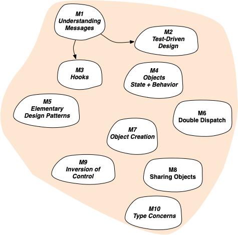

The Advanced Object-Oriented Design and Development with Pharo Mooc
About this MOOC
This MOOC is about Advanced Object-Oriented Design. You will get to know and understand the key mechanisms and the essence of OOD. Either you are a beginner or an expert in object-oriented programming, this MOOC immerses you in advanced object-oriented design. We are sure that you will not develop the same way after following this unique lecture. It is built on more than 60 years of expert teaching object-oriented design. This MOOC invites you to a journey around 10 modules (with over 60 videos) covering the following topics:
- Understanding messages
- Test-Driven Design
- Hooks: support for evolution
- Objects: state and behavior
- Elementary design patterns
- Double dispatch
- Object creation
- Sharing objects
- Inversion of control
- About types
Why the Pharo programming language?
This MOOC uses Pharo as a pedagogical vehicle but all the concepts you will learn are language independent and can be applied to any object-oriented language.
Nevertheless, we use Pharo because it is a pure object-oriented programming language.
It offers a unique developing experience in constant interaction with live objects.
Pharo is elegant, fun to use, and very powerful. It is very easy to learn and enables to understand advanced concepts in a natural way.
When programming in Pharo, you are immersed in a world of live objects.
You have immediate feedback at any moment of your development on objects representing web applications, code itself, graphics, and network. More…
Note that there is a full MOOC on Pharo but it is not a requirement.
But, if you already followed it and liked it, this MOOC on Advanced Object-Oriented Design will bring you to the next level ;-)
How to follow this MOOC?
Join the next session on FUN: Opening January 2024.
or get all the material http://rmod-pharo-mooc.lille.inria.fr/AdvancedDesignMooc/. Check the resources section below.
Mooc Map
The following picture shows the different modules. You can see the mooc overview PDF / VIDEO
Module 0: Little Warm up with Pharo
This first optional module presents some lectures from the Pharo Mooc. It helps the reader who wants to follow the syntax used in the slides and do the exercises to learn fast Pharo. We suggest to execute the expression ProfStef new go and perform the proposed exercises.
Teaching objectives- Pharo syntax
- Pharo object model
- M0-1 LecturePharo Object Model in a Nutshell PDF / VIDEO
- M0-2 LecturePharo Syntax in a Nutshell PDF / VIDEO
- M0-3 LectureClass and Method Definitions PDF / VIDEO
- M0-4 LectureUnderstanding Messages PDF / VIDEO
- M0-5 LectureMessages for Java Programmers PDF / VIDEO
- M0-6 LectureMessages: Composition and Precedence PDF / VIDEO
- M0-7 LectureUnderstanding Messages: Sequence and Cascade PDF / VIDEO
- M0-8 LectureIntroduction to Blocks PDF / VIDEO
Module 1: Understanding messages
This first module revisits elementary concepts around self, super, and the power of dispatching to dedicated objects. The case study shows how to go from a monolithic design with one kind of format to the handling of optional different formats in the Pillar document compilation chain.
Teaching objectives- Completely rethink what it means to send a message
- Explain that sending a message is making a choice based on classes
- Distinguish between static and dynamic approaches to inheritance
- Understand what is to send a message and how lookup works
- Understand deeply what super is
- Apply the mechanics of a transformation that makes implicit behavior explicit
- M1-1 LectureEssence of Dispatch: Taking Pharo Booleans as Example PDF / VIDEO
- M1-2 LectureEssence of Dispatch: Let the receiver decide PDF / VIDEO
- M1-3 LectureInheritance Basics PDF / VIDEO
- M1-4 LectureInheritance and Lookup: Self - Understand lookup once for all PDF / VIDEO
- M1-5 LectureAbout super PDF / VIDEO
- M1-6 LectureReification and delegation - A case study: Microdown in Pillar PDF / VIDEO
Module 2: Tests
This module covers an important aspect: testing applications and how to take advantage of test driven design. It shows in particular the power of eXtreme Test Driven Design and how writing tests first and coding in the debugger is empowering the designer.
Teaching objectives- Understand the structure and benefits of a test and specify a proper automated test
- Identify the benefits and characteristics of a good test suite
- Identify the benefits and apply a Test Driven Development workflow
- Specify and apply the Xtrem Test Driven Development method with Pharo tools
- Create a parameterized test and reuse it with specific values
- M2-1 LectureTest 101: The minimum you should know PDF / VIDEO
- M2-2 LectureTests: Why testing is Important? PDF / VIDEO
- M2-3 LectureTest-Driven Development PDF / VIDEO
- M2-4 LectureXtreme Test Driven Development: Getting a productivity boost PDF / VIDEO
- M2-5 LectureParametrized Tests: Getting more tests out of test cases PDF / VIDEO
Module 3: Hooks
In this module we will start to look at design patterns. In parallel, we will discuss a key point of object-oriented design which is how to design abstractions that are extensible using hooks. The case study is about going from monolithic to parametrized objects.
Teaching objectives- Get exposed to design patterns
- Use hooks to extend code
- Analyze hook and template methods
- Use a stream and avoid creating spurious objects
- Move from a monolithic global design to one that can be parameterized
- M3-1 LectureAn introduction to design patterns PDF / VIDEO
- M3-2 LectureMessage Sends are Plans for Reuse PDF / VIDEO
- M3-3 LectureHooks and Template: One of the cornerstones of OOP PDF / VIDEO
- M3-4 LectureUsing well asString and printString: A Pharo code idiom PDF / VIDEO
- M3-5 LectureGlobal to parameter PDF / VIDEO
Module 4: Objects: state and behavior
In this module we will focus on basic principle showing for example the difference between data and objects. We will start also to present some design patterns such as Singleton and Decorator.
Teaching objectives- Rethink object API
- Distinguish between an object and a data structure
- Identify the different syntactic forms of global variables
- Identify the disadvantages of fat classes and replace them with class hierarchies and delegation
- Implement the Singleton pattern, with its advantages and disadvantages
- Apply the Decorator design pattern and identify when to use it
- M4-1 LectureMethods: the elementary unit of reuse PDF / VIDEO
- M4-2 LectureObjects vs. Data - An API perspective studying the class Point PDF / VIDEO
- M4-3 LectureAbout global variables PDF / VIDEO
- M4-4 LectureFat classes are bad - A large class vs. a class hierarchy PDF / VIDEO
- M4-5 LectureSingleton: a Highly Misunderstood Pattern PDF / VIDEO
- M4-6 LectureDecorator Design Pattern PDF / VIDEO
Module 5: Elementary design patterns
In this module we will present some important and simple design patterns such as composite or state. We will then propose to compare use versus inheritance a way to understand the forces in presence.
Teaching objectives- Understand the Composite design pattern and identify when to use it
- Use the State design pattern to design objects with many states, complex transitions between states and operations that depend on each state
- Understand the Command design pattern and identify when to use it
- Use a design pattern in the real world
- Compare inheritance-based and delegation-based designs
- Identify the benefits of using objects to represent complex algos
- Recognize when it is preferable to use objects rather than lexical closures
- Identify the use of NullObject design pattern and the benefit of object state initialization
- Manage methods with a large number of arguments and design fluid APIs
- M5-1 LectureComposite: a Nice and Common Design Pattern PDF / VIDEO
- M5-2 LectureAbout State Design Pattern PDF / VIDEO
- M5-3 LectureCommand Design Pattern: Actions as objects PDF / VIDEO
- M5-3 LectureApplication of Command Design Pattern PDF / VIDEO
- M5-4 LectureDelegation vs. Inheritance PDF / VIDEO
- M5-5 LectureTurning Procedures to Objects PDF / VIDEO
- M5-6 LectureBlocks vs. Objects: Rethinking common abstractions PDF / VIDEO
- M5-7 LectureAvoid Null Checks PDF / VIDEO
- M5-8 LectureAbout Fluid API PDF / VIDEO
Module 6: About double dispatch
This module presents the double dispatch mechanism and the Visitor design pattern which is based on it.
Teaching objectives- Use the power of sending messages to get a more modular design
- Apply Double dispatch to non-symmetrical domains
- Identify the double dispatch mechanisms and use them with a simple example
- Apply the Visitor design pattern and identify when to use it
- Use and implement the possible variations of the Visitor design pattern
- Question the return of values, numbers vs. symbols
- Use the double dispatch mechanisms in more complex cases
- M6-1 LectureA double dispatch starter: Stone Paper Scissors PDF / VIDEO
- M6-2 LectureDouble dispatch: Does not have to be symmetrical PDF / VIDEO
- M6-3 Lecturea Die + a DieHandle: Practicing dispatch more PDF / VIDEO
- M6-4 LectureVisitor: Modular and extensible first class actions PDF / VIDEO
- M6-5 LectureSome discussions on Visitor PDF / VIDEO
- M6-6 LectureStone Paper Scissors: The case of results PDF / VIDEO
- M6-7 LectureDouble Dispatch: Adding numbers as a Kata PDF / VIDEO
Module 7: Creation
This module focuses on patterns to create and initialize objects.
Teaching objectives- Identify the benefit of delaying the initialization of an object until it is needed
- Analyze the impact of the granularity of hooks
- Use a mechanism for specifying extensible class names by default to avoid hardcoding them
- Use the delegation of actions and accumulator concepts
- Use of behavior delegation to avoid programming complex conditions
- Use the Builder design pattern to create complex object graphs
- Identify and use different API design alternatives for Builder Patterns
- Explain the relation between super and lookup when sending a message
- M7-1 LectureAbout Null Check: The case of lazy initialization PDF / VIDEO
- M7-2 LectureCustomization degree of hooks: Class vs. instance hooks PDF / VIDEO
- M7-3 LectureDieHandle new vs. self class new: When classes are first class citizen PDF / VIDEO
- M7-4 LectureDelegation of actions and accumulator: Form validation as an example PDF / VIDEO
- M7-5 LectureBehavior delegation at work: The case of the class printer PDF / VIDEO
- M7-6 LectureBuilder Design Pattern: Encapsulating object creation PDF / VIDEO
- M7-7 LectureBuilder API variations PDF / VIDEO
- M7-8 LectureDid You Really Understand Super? PDF / VIDEO
Module 8: Sharing
This module presents different techniques and design patterns to share objects.
Teaching objectives- Use a shared variable and analyze its impact on the instances of a hierarchy
- Misunderstood resource sharing with instance-specific information to extend the spectrum of object sharing
- Group and share constants between multiple classes
- Customize hooks to define and reuse magic literals to avoid hardcoding them in the code
- Identify the implementation compromises for the Flyweight pattern
- Represent attributes that are common to a type of objects in a more flexible way
- Share objects while allowing properties to be modified
- M8-1 LectureShared variables: A Pharo code idiom PDF / VIDEO
- M8-2 LectureSharing with instance specific possibilities PDF / VIDEO
- M8-3 LectureShared Pools: Static sharing between hierarchies PDF / VIDEO
- M8-4 LectureAbout magic literals PDF / VIDEO
- M8-5 LectureFlyweight PDF / VIDEO
- M8-6 LectureTypeObject PDF / VIDEO
- M8-7 LectureA variation on sharing PDF / VIDEO
Module 9: About Inversion of control / Registration
In this module, we present the law of demeter and different techniques to achieve Inversion of control.
Teaching objectives- Reduce the impact of change in complex systems by following Demeter's Law
- Use class methods to create extensible designs
- Use an explicit registration mechanism and explain its benefits
- Identify a monolithic architecture and propose different solutions to transform it into a more modular one
- Analyze an existing design and remodel it to make it modular using message dispatch
- Understand object programming as opposed to a design approach that focuses more on classes than on objects
- M9-1 LectureAbout coupling and encapsulation PDF / VIDEO
- M9-2 LectureClass Methods At Work PDF / VIDEO
- M9-3 LectureAbout Registration: When class method-based registration is too much PDF / VIDEO
- M9-4 LectureApplication settings: From a monolithic to a modular architecture PDF / VIDEO
- M9-5 LectureLearning from a Sokoban implementation PDF / VIDEO
- M9-6 LectureClass vs. Object-Oriented Programming PDF / VIDEO
Module 10: About Types
This modules focuses on typing and their relation with object-oriented design.
Teaching objectives- Disprove the common misconception that instance variables must be private
- Explain the difference between Subclasses and Subtypes
- Describe the relationship between sending a message associated with the selection of lookup methods and static types
- Explain the need for interfaces in statistically-typed languages and their uselessness in dynamically-typed languages
- Explain the pros and cons of using defensive checks in programming
- M10-1 LectureThe two interfaces: In presence of delta programming PDF / VIDEO
- M10-2 LectureSubclassing vs. Subtyping PDF / VIDEO
- M10-3 LectureAbout type and method lookup PDF / VIDEO
- M10-4 LecturePolymorphic objects: Support for software evolution PDF / VIDEO
- M10-5 LectureAbout defensive programming PDF / VIDEO
Get started
Install Pharo
Download and install the Pharo Launcher for your OS
External resources
You can find free and online resources in the Documentation page.
We recommend the Updated Pharo by Example book, the Pharo cheat-sheet, and the new book Learning Object-Oriented Programming, Design and TDD with Pharo on http://books.pharo.org
Join the discord server of the community There is newbie help channel and people are friendly.
Authors
Stéphane Ducasse
Stéphane Ducasse is directeur de recherche at Inria. He leads the RMoD team. He is expert in two domains: object-oriented language design and reengineering. His works on traits have been introduced in AmbientTalk, Slate, Pharo, Perl-6, PHP 5.4 and Squeak. They have also influenced JavaScript, Scala and Fortress. Stéphane is also expert on software quality, program understanding, program visualisations, reengineering and metamodeling. He is one of the developers of Pharo. He is also one of the developers of Moose, an open-source software analysis platform. He created Synectique a company building dedicated tools for advanced software analysis. Stéphane wrote several books on programming learning and other topics such as web programming.
Luc Fabresse
Luc Fabresse is currently professor in computer science at IMT Nord Europe. His researches focus on dynamic and reflective languages such as Pharo to better support programming in the context of mobile robotics and IoT. It involves deployment, code update, memory management and bootstrapping. He also works on fleet of collaborating mobile robots involving challenges such as: localization, navigation and distributed coordination. Luc's long-term vision is to be able to use Jedi mind trick on mobile robots ;-) Meanwhile, Luc gives many computer science lectures, co-organizes events (technical days, conferences, ...), promotes Smalltalk (ESUG board member) and participates to its open-source implementation Pharo.
Guillermo Polito
Guille Polito is a permanent researcher at Inria of the University of Lille, within the EVREF team. Guille’s main research interests are programming language implementations, Virtual machines, testing, programming tools, and modular systems. He has more than 15 years in teaching advanced OOP.

Pablo Tesone
Pablo Tesone is Pharo consortium engineer. He holds a PhD in Computer Science from the University of Lille. Prior to that, Pablo was during 10 years an engineer in large corporates. Pablo has a large spectrum of skills ranging from low-level assembly to high-level reflective systems. He is one of the engineers behind the Pharo Virtual machines. He is the father of stateful traits as available in Pharo. He has more than 15 years in teaching advanced OOP.